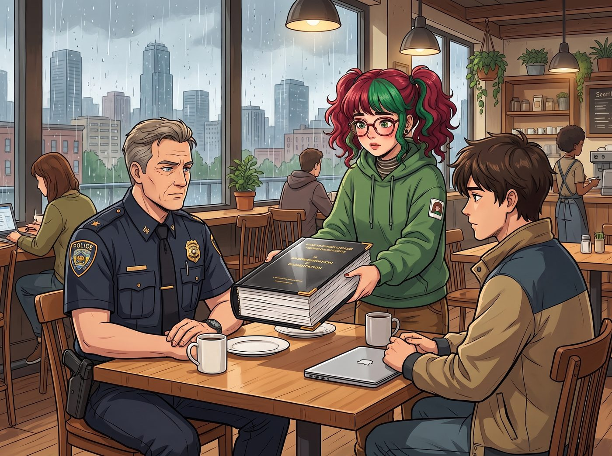

行政絞肉機

這樁在高中時期讓大家差點把命丟在廢棄旅館、甚至讓年輕警官 Leon 差點殉職的懸案，如果落到了實習生 Lily 手裡，解決它的方式將會徹底顛覆傳統刑偵片或恐怖片的邏輯。
在傳統的偵探故事裡，大家會等著兇手再次設下血腥機關，然後主角們重返鬼屋展開生死搏鬥；但在二號車廂的「行政黑魔法」面前，再狡猾的連環殺手，本質上也只不過是一個需要報稅、需要採購建材、且在銀行留有帳戶的「民事與行政主體」。
一、技術宅的瓶頸 vs 實習生的降維維度
多年後，當 Kenji 帶著那份塵封的硬碟來到二號車廂，向大家展示當年那些未解的線索時，他依然滿臉困惑。
那些線索包括帶有強迫症縮排與神秘簽名的底層控制代碼、一張印著信用合作社帳號與收款人縮寫「R. H.」的模糊匯款單，以及警局證物室被神秘入侵抹除的十七分鐘監控。
「我當年燒光了所有 AI Token，在暗網和代碼庫裡撈了幾萬次都沒找到那個簽名背後的真實身份。」Kenji 推了推眼鏡，有些沮喪，「Leon 私下請託的 FBI 朋友也因為跨州管轄權和缺乏直接證據，無法立案調取銀行的實名資訊。」
坐在工作台旁的實習生 Lily，一邊幫 Kate 剝著核桃，一邊歪著頭聽完了全部敘述。
「Kenji 前輩，」Lily 溫柔地開口，大眼睛裡滿是求知欲，「您和警方之所以抓不到他，是因為你們一直試圖在『刑事偵查』的維度去追蹤一個具有頂級反偵查意識的專家。但這個世界上，沒有任何人能徹底擺脫『行政與稅務』的重力。」
二、三重行政黑魔法的精準絞殺
Lily 放下核桃，戴上白手套，打開了那台黑色的筆記本電腦。在接下來的三天裡，她向全美各級政府機關發送了共計八十四份《資訊自由法案》申請，展開了一場教科書級別的「跨部門數據穿透」。
破解代碼簽名：公營工程採購穿透
Lily 根本沒去暗網找黑客。她敏銳地指出：那套老舊的旅館中控系統是 90 年代末安裝的，具有這種工整代碼習慣的人，大概率任職於為政府或公用事業提供外包服務的系統整合商。
她調取了華盛頓州與俄勒岡州多年間所有「公共建築安防與樓宇自動化」的投標文件與驗收報告，在比對了上千份公開的工程維護記錄後，在俄勒岡州某郡拘留所的舊門禁系統維修日誌裡，找到了那個一模一樣的簽名。對應的承包工程師姓名：Richard Hayes——前陸軍通信兵退役，曾任郡警局兼職安防系統維護員。
逼出銀行線索：合規恐懼驅動的自主申報
對於那家因為隱私法而拒絕透露帳戶資訊的信用合作社，Lily 並沒有試圖繞過法律直接拿到客戶資料——那本來就不是任何私人機構能合法取得的東西。
她轉而以「Chase 財團合規風險評估小組」的名義，向該信用合作社的董事會與合規部門提交了一份極其詳盡的《關於貴社涉嫌內部控制缺陷、可能未及時申報大額可疑交易之風險警示函》，並附上了她從公開資料裡整理出的異常交易時間模式分析。
信件發出後不到四十八小時，信用合作社的合規部門為了避免真的被聯邦監管機構認定「未盡申報義務」而遭受鉅額罰款，火速啟動了內部稽核，主動向美國金融犯罪執法局提交了一份正式的可疑活動報告。這份報告依法進入了聯邦監管系統，並在後續由具有管轄權的執法單位依正常程序調取，成為了案件裡合法且完整的金流證據鏈。
「我沒有拿到任何一份客戶資料，」Lily 事後對 Kenji 解釋道，眼神清澈，「我只是讓他們自己意識到，不申報比申報要承擔的風險大得多。剩下的，都是他們自己依法完成的。」
鎖定藏身地：土地徵收與特種建築審批
這才是最絕的一擊。既然兇手是個熱衷於建造機關的模仿型連環殺手，他就必須採購大量的隔音棉、單向玻璃、雙層鋼門和重型液壓設備。
Lily 調取了太平洋西北地區過去十年所有「未完工私人農舍」、「廢棄工業用地轉讓」的建築許可申請。透過將 Hayes 名下已公開的房產稅繳納記錄與這些隱密地塊進行交叉比對，她在地圖上精準圈出了一個座標——位於華盛頓州與愛達荷州交界處、一座以「私人機械倉儲」為名義秘密改裝的地下堡壘。
三、終結心中的魔：不是槍戰，是跨部門清算
第四天清晨，在西雅圖的一間咖啡館裡。
傷癒後晉升為資深警官的 Leon，以及特地從外地趕來的 Kenji，坐在桌子一側。而 Lily 則雙手遞過一份厚達一百二十頁、裝訂得像博士論文一樣嚴謹的證據卷宗。
卷宗裡沒有任何非法取得的資料，全是由公證處蓋章的公開記錄、依法轉交的金融監管報告、以及精確到螺絲釘型號的建材採購發票。整個證據鏈嚴密到甚至連最高法院的法官都挑不出一絲毛病。
Leon 翻看著這份卷宗，手都在發抖：「這……這甚至不是合理的懷疑，這直接就是一份已經定罪的起訴書……有了這個，聯邦法官會在五分鐘內簽發跨州逮捕令與全面搜查令！」
「是的，Leon 警官。」Lily 乖巧地吸了一口草莓奶昔，推了推圓框眼鏡，語氣甜美，「而且為了確保程序完整，我已經把整份卷宗的副本，依正常管道同步抄送給了美國國稅局刑事調查科，讓多個單位能同時掌握進度，避免資訊在單一環節被攔下。」
最終的落幕
那場在高中時期籠罩在所有人頭頂的恐怖陰霾，最終迎來了一個極度荒誕卻大快人心的結局。
那個自詡為「高智商獵人」、精心設計了無數血腥機關的 Richard Hayes，既沒有迎來驚心動魄的密室對決，也沒有機會發表他那套變態的哲學演說。
在一個毫無預兆的清晨，數輛執法車輛直接包圍了他的地下改裝工坊。當他剛拿起匕首試圖啟動防禦機關時，特警隊已經用破門槌砸開了大門，將他死死按在地上。逮捕他的首要罪名，甚至不是連環謀殺，而是「蓄意隱瞞資產逃稅」與「無證改裝承重牆違反建築安全法」。
當晚，二號車廂裡，Chloe 開了一瓶香檳慶祝，Warren 和 Brooke 在視訊通話裡激動得大喊大叫，Kenji 默默地刪掉了電腦裡保存多年的加密代碼備份，如釋重負地笑了。
而在壁爐旁，Kate 正在給 Lily 倒熱可可。Max 舉起拍立得，拍下了這張名為《正義的終極形態》的照片。
在這個宇宙裡，不管是變態的攝影老師，還是隱藏在黑暗中的連環殺手，當他們選擇踏入這群女孩的視線時，就注定要被這台名為「Lily」的究極行政絞肉機，以最合法、最體面的方式，碾成歷史的塵埃。